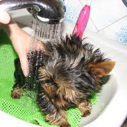

Содержание и уход
Как правильно ухаживать за собаками в жаркое время года
Правила ухода за шерстью
Бешенство у собак.
Как защитить собаку от клещей и других насекомых?
Когда и как нужно вакцинировать собак?
Как сушить собаку после купания?
Глисты у собак и их влияние на организм животного
Как ухаживать за зубами
Как ухаживать за лапами и когтями
Как правильно чистить собаке уши

Как сделать мытье собаки приятным
Правильное питание
Что делать, если у собаки появился лишай?
Игра необходима собаке